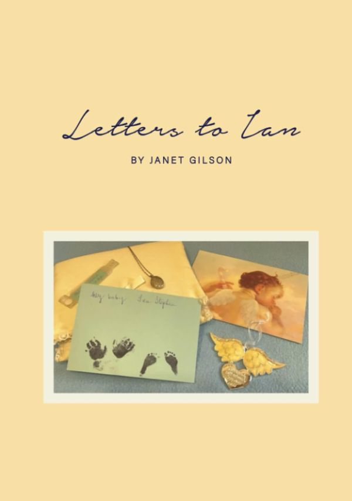
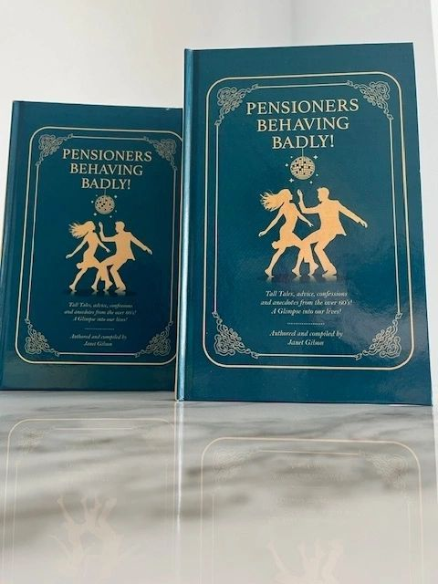

Tall tales, advice, confessions and anecdotes
Pensioners Behaving Badly!
Time really does fly is an overused saying, but it’s true. One minute you are young and carefree, and the next minute you are planning your pension. You are dreading turning 40 and then you blink and you’re 60.
In this book I offer golden nuggets of advice for all, with fun anecdotes and true stories. It’s packed with information I’ve garnered from many different people and places, as I wanted to give other over 60s a voice too.
A glimpse into our lives.
The Diary of an Ordinary Woman
Behind the Smile
Whilst fundamentally a memoir, I like to think of this book as essentially a message of hope. It looks back at historical abuse and the impact it has had on my life and health, and how I survived and came out the other side stronger.
What makes this book unique is that I am just an ordinary person, and I believe the story is easily relatable for others.
A message of hope, from an ordinary woman.

A memoir of loss
Letters to Ian
Following the loss of my son during pregnancy, I started to write to him to keep his memory alive, and as a way of channelling the grief I was trying to keep locked inside.
Twenty-one years later I share this book as a tribute to my son, Ian, who I sadly never got to keep. I hope that by sharing these letters it may help others navigate their own grief and bring comfort and hope.
A tribute to my son, Ian.
In Malta
If you live in Malta and would like a copy of any of my books, email me and I will arrange it. A dozen Amazon shops are linked from my site, from the UK to Japan.

About Janet
I live in Malta with my husband, and I am both a mother and grandmother. Originally from the UK, I moved to Malta when I met and married my Maltese husband over thirty years ago.
I studied psychology and obtained a certificate in counselling, intrigued by how people recover from trauma. After early retirement I now do something I love, writing. I hope that by sharing my life experiences I might help others who have passed through similar things.
Where to find me
My books are in independent bookshop The Book Dragon, on Amazon, and by email if you are in Malta.